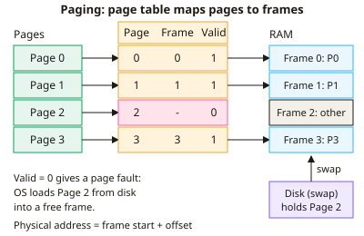

A-level Computer Science Year 13 · Topic 10
Software and software development
Software and software development covers the software that controls computers, and how large programs are built.
We will study operating systems, memory management, interrupts and scheduling.
Then we look at types of operating system, licensing, translators and compilation, and development methodologies.
- 7 subtopics
- 224 questions
- Free: 10.1 notes and 10 questions
In this topic
- 10.1Operating systems: memory management, paging, segmentation and virtual memoryFree below · 48 questions
- 10.2Interrupts and scheduling algorithmsOpen in Full Marks · 30 questions
- 10.3Types of operating system, BIOS, device drivers and virtual machinesOpen in Full Marks · 32 questions
- 10.4Applications, utility software, open source and closed source licensingOpen in Full Marks · 32 questions
- 10.5Translators: compilers, interpreters and assemblersOpen in Full Marks · 26 questions
- 10.6Stages of compilation, linkers, loaders and librariesOpen in Full Marks · 33 questions
- 10.7Software development methodologies: waterfall, agile, extreme programming, spiral and RADOpen in Full Marks · 23 questions
10.1 · Free notes
Operating systems: memory management, paging, segmentation and virtual memory

Key points
- The OS memory management function allocates RAM to processes, keeps each process's memory protected from the others, and lets several programs be loaded at once (multitasking).
- Paging divides physical memory into fixed-size frames and logical memory into pages of the same size. A page table maps each page number to a frame number.
- A logical address is page number + offset. The physical address is frame number × frame size + offset, because the offset is unchanged. Pages do not need to sit contiguously in RAM.
- Paging removes external fragmentation, but the last page of a process is rarely full, which leaves internal fragmentation (wasted space inside a page).
- Segmentation divides a program into variable-sized logical units such as code, data, stack and procedures. Each segment has an entry in a segment table holding its base address and limit (length).
- Pages are fixed-size and invisible to the programmer. Segments are variable-size and match the program's logical structure, so segmentation can suffer external fragmentation.
- Virtual memory uses a swap file/partition on secondary storage as an extension of RAM. Programs larger than RAM can run, and only the pages currently needed are loaded (demand paging).
- A page fault occurs when a referenced page is not in RAM. The OS loads it from disk. If RAM is full, a page replacement algorithm (e.g. FIFO, least recently used) chooses a page to swap out.
- Disk thrashing happens when RAM is too small for the active pages, so the system spends more time swapping pages than executing instructions. Fixes are adding RAM or running fewer processes.
- Virtual memory is much slower than RAM because secondary storage has far higher access times. SSDs reduce this penalty but do not remove it.
- Memory protection: a request beyond a segment's limit, or to a page not belonging to the process, is refused (a segmentation fault/protection error). Number of pages = program size ÷ page size, rounded up.
In more detail
- Worked paging address: with 4 KB pages, logical address 9000 is page 2 (9000 DIV 4096) offset 808; if page 2 is in frame 5, the physical address is 5 × 4096 + 808 = 21 288.
- Worked segmentation: code, data and stack segments each have a base and a limit; accessing beyond the limit causes a segmentation fault.
- Worked LRU: with 3 frames and references 1, 2, 3, 1, 4, page 4 replaces page 2, the least recently used.
- Worked thrashing fix: add more RAM, or run fewer programs at once.
Practice
Operating systems: memory management, paging, segmentation and virtual memory: 10 questions
Pick an answer to check it, or open the answer for the explanation.
1. In paging, what name is given to the fixed-size blocks into which physical memory is divided?
- Segments
- Frames
- Pages
- Sectors
Show answer
B: Frames. Physical memory is divided into frames; logical memory is divided into pages of the same size. Segments are variable-sized logical units.
2. A system uses 4096-byte pages. A process uses logical address 10 000. Which page number and offset does this give?
- Page 2, offset 1808
- Page 3, offset 1808
- Page 1, offset 5904
- Page 2, offset 1904
Show answer
A: Page 2, offset 1808. 10 000 ÷ 4096 = 2 remainder 1808 (2 × 4096 = 8192; 10 000 − 8192 = 1808). Offset 5904 would exceed the page size.
3. An 18 KiB program is loaded using 4 KiB pages. How many pages are needed and how much internal fragmentation results?
- 4 pages, 2 KiB
- 5 pages, 4 KiB
- 5 pages, 2 KiB
- 5 pages, 0 KiB
Show answer
C: 5 pages, 2 KiB. 18 ÷ 4 = 4.5, rounded up to 5 pages (20 KiB). The unused part of the last page is 20 − 18 = 2 KiB of internal fragmentation.
4. Which statement about segmentation is correct?
- Segmentation removes any need for address translation
- Segments are variable-sized logical units such as code, data or stack
- Segments cannot be placed in virtual memory
- Segments are all the same fixed size
Show answer
B: Segments are variable-sized logical units such as code, data or stack. Segments reflect the logical structure of a program and vary in size. Each has a base and limit in a segment table, so translation is still needed.
5. What is a page fault?
- The page being accessed is not in RAM and must be loaded from disk
- A page table with every entry marked valid
- A program writing outside its segment limit
- A faulty RAM chip causing corrupted data
Show answer
A: The page being accessed is not in RAM and must be loaded from disk. A page fault occurs when a referenced page is not in a frame. The OS fetches it from secondary storage, possibly replacing another page.
6. Page 5 maps to frame 12 and pages are 1024 bytes. What is the physical address of offset 100 in page 5?
- 1324
- 12 388
- 12 288
- 5220
Show answer
B: 12 388. Physical address = 12 × 1024 + 100 = 12 288 + 100 = 12 388. 5220 wrongly uses the page number instead of the frame number.
7. Which type of fragmentation is eliminated by paging?
- Neither internal nor external
- Internal fragmentation
- External fragmentation
- Both internal and external
Show answer
C: External fragmentation. Fixed-size frames mean any free frame can be used, so no external fragmentation. Internal fragmentation remains in a process's last page.
8. What is the main benefit of virtual memory?
- It makes disk access faster than RAM access
- Programs larger than the physical RAM can still be run
- It removes the need for page tables
- It permanently increases the amount of installed RAM
Show answer
B: Programs larger than the physical RAM can still be run. Virtual memory uses secondary storage as an extension of RAM, so only the needed pages are in RAM and large programs can run. It does not add physical RAM.
9. Why does heavy use of virtual memory slow a computer down?
- Virtual memory disables the processor cache
- Page tables can only be stored on disk
- The CPU clock speed is reduced when swap is used
- Secondary storage has much higher access times than RAM
Show answer
D: Secondary storage has much higher access times than RAM. Swapping pages to and from secondary storage is orders of magnitude slower than accessing RAM, so frequent page faults cause delays.
10. A segment has base 5000 and limit 800. A process requests offset 900 in that segment. What happens?
- The segment is moved to a larger free area
- Physical address 4100 is accessed
- Physical address 5900 is accessed
- The access is refused because 900 exceeds the limit of 800
Show answer
D: The access is refused because 900 exceeds the limit of 800. The offset must be less than the limit. 900 > 800, so the OS raises a segmentation fault instead of reading 5900, protecting other memory.
Keep going in Full Marks
Full Marks has 48 questions on Operating systems: memory management, paging, segmentation and virtual memory (38 more than here), set out in practice levels. You also get notes and 3D models for all 7 subtopics of Software and software development, plus games, timed exams and past papers.